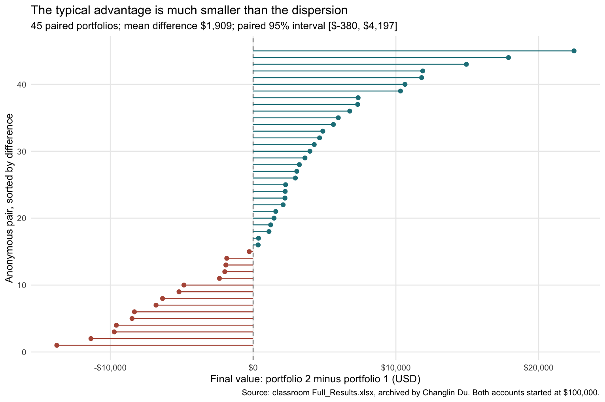
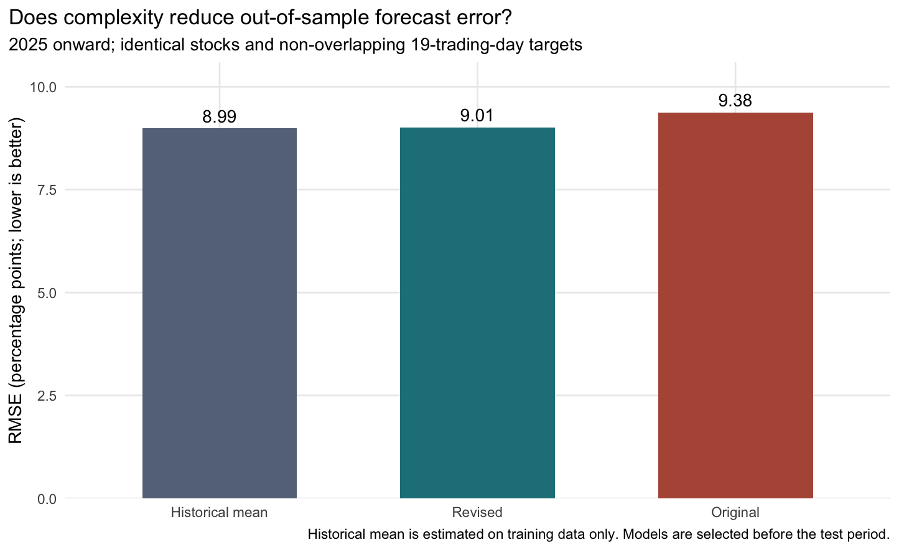
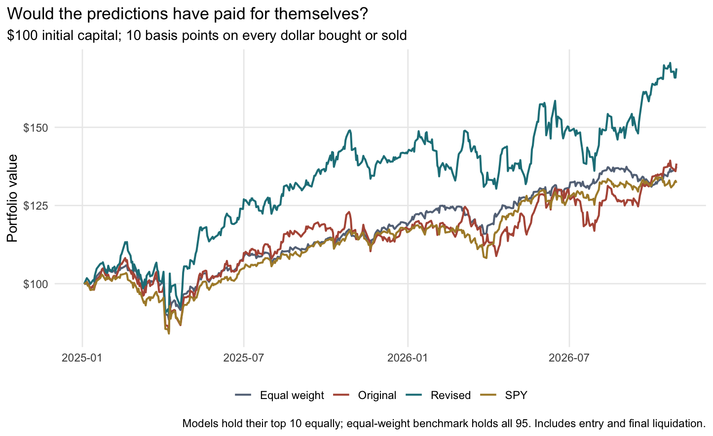
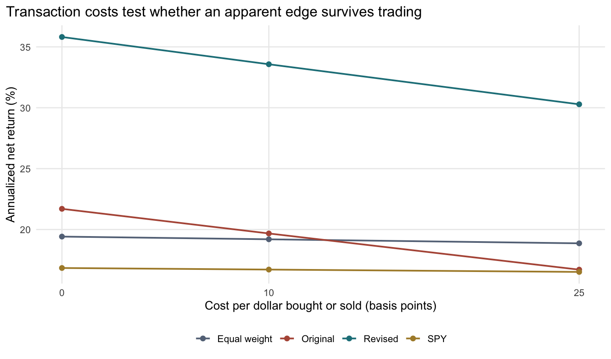

Can a More Cautious Stock Picker Beat a Simple Average?
Gradient boosting, honest holdouts, and the distance between prediction and profit
A stock picker can make money without predicting stocks well: a rising market can reward almost any long portfolio. The useful question is whether its forecasts improve on a simple average, and whether its trades beat a comparable passive portfolio after costs. I test whether a less flexible gradient boosting model can do both.
What the classroom experiment established
The classroom exercise compared two initially $100,000 portfolios per group, with the second selection incorporating technical indicators. In the archived results, portfolio 2 finished ahead in 30 of 45 pairs. Its average advantage was $1,909, but the paired 95% interval ran from -$380 to $4,197 (p = 0.100). That is suggestive, not decisive: the interval includes zero, and the groups experienced the same market rather than independent market histories.

The class code fits 300 boosted trees of depth five to recent prices, returns, momentum, and volatility. Each new tree corrects errors left by earlier trees. This flexibility can detect nonlinear patterns, but also fit accidental ones. Public information may already be reflected in prices; unexpected news changes returns; and a relationship learned in one market regime may disappear in another.
Give the model fewer ways to fool itself
I use the same 95-stock universe and cached Yahoo Finance adjusted prices, January 2022–November 12, 2026, archived in Changlin Du’s repository. Both models predict the return from the next trading day’s close to the twentieth day’s close: 19 trading-day intervals, despite the usual “20-day return” label.
The baseline preserves the class predictors and specified hyperparameters; both models are refitted on a common training period for a controlled comparison. The revision removes raw price levels and raw volume, uses conventional backward-looking momentum, relative volume, and drawdown, and restricts trees to depth two or three. A $200 share is not inherently more promising than a $20 share; these features describe comparable changes instead of dollar scales.
Validation in 2024 selects 100 trees of depth 2 from four configurations. I then refit both models using labels fully observed before 2025. The held-out test covers 24 holding periods, January 3, 2025–October 29, 2026. Purging training rows whose future returns cross each boundary prevents tomorrow’s outcomes from entering today’s training set. The historical-mean forecast uses those same training observations.
Prediction and investment are different tests
Test forecasts are evaluated on non-overlapping holding periods. The original, revised, and historical-mean RMSEs are respectively 9.38, 9.01, and 8.99 percentage points. RMSE penalizes large forecast errors. The revised model’s average within-date rank correlation is 0.06; ranking matters when a portfolio buys only the highest-scoring stocks.

A three-period block bootstrap gives a 95% interval of -1.77 to 2.30 squared percentage points for revised minus mean squared error. Negative values favor the revision. The interval spans zero, so the apparent difference is uncertain.
| Model | RMSE (pp) | MAE (pp) | R² vs mean | Direction accuracy | Rank correlation |
|---|---|---|---|---|---|
| Original | 9.375 | 6.829 | -0.088 | 0.543 | 0.028 |
| Revised | 9.010 | 6.624 | -0.005 | 0.554 | 0.059 |
| Historical mean | 8.989 | 6.580 | 0.000 | 0.554 | NA |
Both stock pickers buy their top ten equally. The simple investment benchmark holds all 95 stocks equally; SPY provides additional market context. Every strategy follows the same calendar. Costs are 10 basis points per dollar bought or sold, including initial purchases and final liquidation, with weights allowed to drift between trades.
The revised strategy turns $100 into $168.84, versus $138.40 for the original and $137.40 for the equal-weight benchmark. Its maximum daily drawdown is -20.36%. The higher payoff comes with annualized volatility of 26.91%, versus 14.24% for equal weight. Its zero-cash-rate Sharpe ratio is lower (1.21 versus 1.31): more profit did not mean more return per unit of volatility. At 25 basis points, its ending value remains $161.39, so this historical advantage survives the higher assumed trading cost.


| Strategy | Final $ | Annualized return (%) | Max drawdown (%) | Sharpe (zero cash rate) |
|---|---|---|---|---|
| Original | 138.40 | 19.67 | -21.77 | 0.91 |
| Revised | 168.84 | 33.57 | -20.36 | 1.21 |
| Equal weight | 137.40 | 19.20 | -16.48 | 1.31 |
| SPY | 132.26 | 16.71 | -18.76 | 1.01 |
What this evidence can support
The revision reduces the original’s forecast error and does not beat the mean forecast. It outperforms the equal-weight portfolio after the assumed costs. These are separate findings: selecting a few profitable stocks does not make every return forecast accurate.
This is a short retrospective test on a fixed, currently surviving universe, not a point-in-time reconstruction of all investable stocks. Cached prices may contain later revisions. Taxes, market impact, and a positive cash rate are omitted. Even non-overlapping periods share market conditions, so the number of independent opportunities is much smaller than the number of stock rows. The takeaway is a standard of evidence: an improvement should survive an honest holdout, a simple forecast, and a comparable net-of-cost investment benchmark. A profitable backtest alone cannot establish a durable forecasting edge.
Sources and reproducibility
- Class model archived by Changlin Du.
- Cached prices and classroom results. Prices originate from Yahoo Finance; the repository fixes the downloaded vintage.
- Michael Li’s example and Changlin Du’s example informed the assignment context. The 2025 holdout, revision, code, and evaluations here are separate work.
- Code, cached data, and generated results. The README documents commands, predictor definitions, purged splits, and transaction-cost accounting. XGBoost is fitted through Python; R prepares the data, evaluates portfolios, and renders the figures.